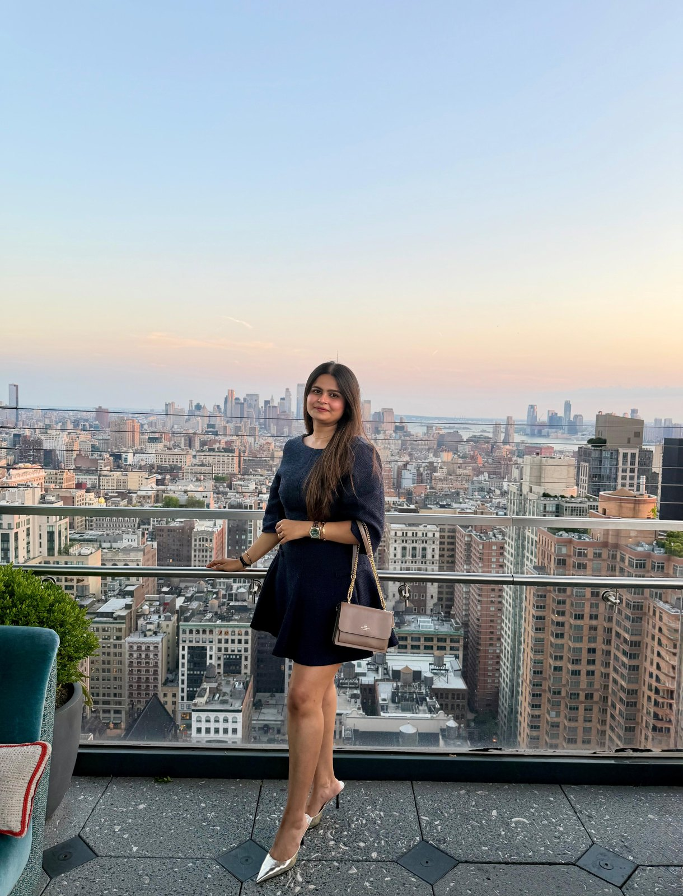
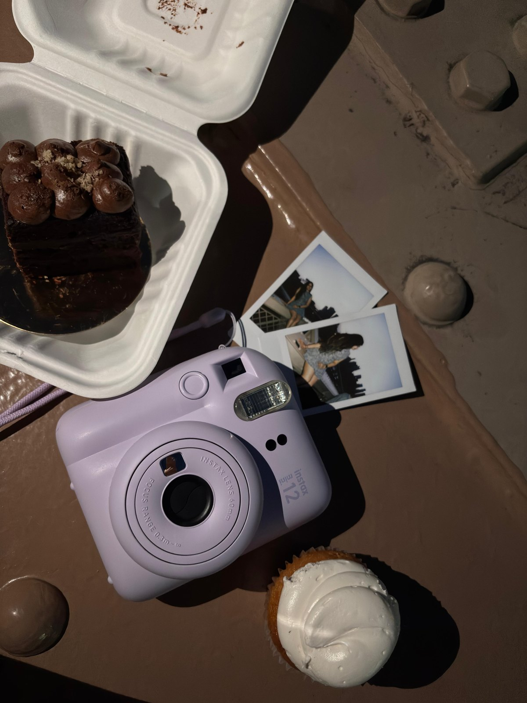

Somewhere new
That place everyone’s talking about? I want to see it for myself. Exploring is my favourite way to get out of my head.
the “let’s just go” friendA LITTLE INTRODUCTION, A LOT OF ME
Hi, I’m Akshita
Curious about people. Inspired by places. Exploring a future in product, data, and business.

a little me, a big world
little joys, big feelings ♡01 / THE PERSON BEHIND THE PAGE
I’m the kind of person who sees a new place and thinks, “Let’s go.” A viral café, a hidden corner, something I’ve never tried before — curiosity usually wins.
I love making everyday life feel a little more beautiful. A good playlist. A pretty little detail. A really good meal when the day hasn’t been kind. To me, those things matter.
And alongside that softer side is a mind that wants to understand things: what people need, what the numbers are saying, and how an idea could become something useful.
equal parts heart & “but why?”02 / MY KIND OF HAPPY
A few reliable ways to make my day.
That place everyone’s talking about? I want to see it for myself. Exploring is my favourite way to get out of my head.
the “let’s just go” friendSome days need a softer song. Others need the volume turned up. Music has a way of making everything feel lighter.
a soundtrack for every feelingMy bad-day reset is simple: something delicious. Bonus points for a lovely little spot and a new thing on the menu.
comfort, with a side of curiosity03 / POSTCARDS FROM MY WORLD
Places I wandered. Little moments I kept.
Not everything needs a plan. Some things just need a “let’s go.”
04 / THE CHAPTER I’M BUILDING
I’m drawn to the space where people, data, and decisions meet. My career interests connect a shared curiosity: how can we understand a problem better and make the next decision more thoughtful?
still learning. always becoming.Understanding people’s needs and shaping ideas into thoughtful, useful experiences.
People · Problems · PossibilitiesFinding the story in the numbers — and turning curiosity into clearer decisions.
Patterns · Questions · InsightsConnecting the dots between a problem, the people it affects, and a way forward.
Context · Clarity · DirectionMore than a title.
A person in progress.